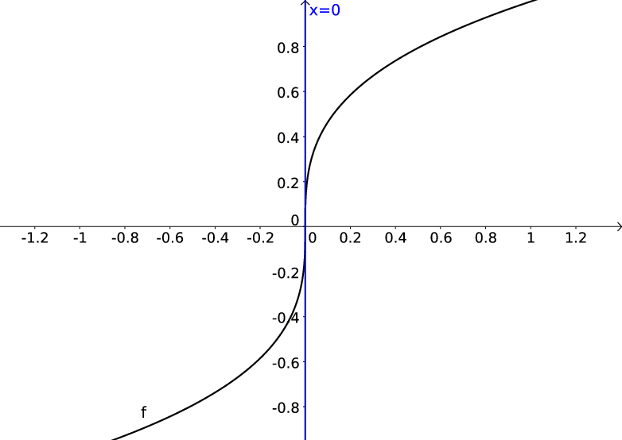

3. Afleiður¶
Athugasemd
Nauðsynleg undirstaða
Markgildi. Sjá einnig undirstöðuatriði um markgildi.
Samfelldni. Sjá einnig undirstöðuatriði um samfelld föll.
Samskeyting falla. Sjá einnig undirstöðuatriði um um samskeytingu.
Andhverfur falla. Sjá einnig undirstöðuatriði um andhverfur.
He felt that his whole life was some kind of dream and he sometimes wondered whose it was and whether they were enjoying it.
– Douglas Adams, The Hitchhiker’s Guide to the Galaxy
3.1. Skilgreining á afleiðu¶
3.1.1. Skilgreining: Afleiða¶
Látum \(a\) vera innri punkt skilgreiningarsvæðis falls \(f\).
Afleiða fallsen: derivative.
Smelltu fyrir ítarlegri þýðingu.
Ef markgildið er til þá er sagt að fallið \(f\) sé
diffranlegten: differentiable.
Smelltu fyrir ítarlegri þýðingu.
3.1.2. Dæmi¶
Fallið \(f(x) = x^2\) er diffranlegt í sérhverjum punkti \(a\). Það sést af því að
3.1.3. Setning¶
Ef fall \(f\) er diffranlegt í punkti \(c\) þá er \(f\) samfellt í punktinum \(c\).
Aðvörun
Fall getur verið samfellt í punkti \(c\) án þess að það sé diffranlegt í \(c\).
3.1.4. Dæmi¶
Fallið \(f(x) = |x|\) er samfellt. En það er ekki diffranlegt í punktinum \(x=0\). Það sést af því að
en
Þannig að markgildið \(\lim_{h\to 0} \frac{f(0+h)-f(0)}{h}\) er ekki til og því er fallið ekki diffranlegt í \(x=0\).
3.1.5. Snertill¶
Afleiðu falls \(f\) í punktinum \(a\) fæst með því að taka
sniðil
Þetta gefur hallatölu snertilsinsen: tangent line.
Smelltu fyrir ítarlegri þýðingu.
Jafna snertils við graf fallsins í punktingum \(a\) er línan
3.1.6. Athugasemd: Hallatalan \(\infty\) er ekki leyfð¶
Við leyfum ekki \(f'(a) = \infty\) eða \(f'(a) = -\infty\). Samanber \(f(x) = x^{\frac 13}\) í \(a=0\),
Hér ætti því jafna snertilsins að vera \(x=0\).
{kind=link}
Við viljum að snertillinn sé nálgun við graf fallsins fyrir \(x\) nálægt \(a\), lóðrétt lína er gagnslaus nálgun því hún er ekki skilgreind sem fall af \(x\).
3.2. Útvíkkun fyrir lokuð bil¶
Ef fallið \(f\) er skilgreint á lokuðu bili þá getum við skilgreint afleiðuna í endapunktunum með því að taka markgildi frá hægri/vinstri eftir því sem við á.
3.2.1. Skilgreining: Hægri/vinstri afleiða¶
Hægri afleiða falls \(f\) í punkti \(x\) er skilgreind sem
\[f_+'(x)=\lim_{h\rightarrow 0^+}\frac{f(x+h)-f(x)}{h}.\]Vinstri afleiða falls \(f\) í punkti \(x\) er skilgreind sem
\[f_-'(x)=\lim_{h\rightarrow 0^-}\frac{f(x+h)-f(x)}{h}.\]
3.2.2. Setning¶
Ef \(x\) er innri punktur í skilgreiningarsvæði fallsins \(f\) þá er \(f\) diffranlegt í \(x\) þá og því aðeins að
og þá er \(f'(x)\) jafnt og markgildin hér fyrir ofan.
Þetta leiðir beint af skilgreiningunum hér á undan og Setningu 2.2.5.
3.2.3. Skilgreining: Diffranlegt fall¶
Látum \(f\) vera fall með skilgreiningarsvæði \(A\). Gerum ráð fyrir að \(A\) sé sammengi endanlega margra bila. Við segjum að fallið \(f\) sé diffranlegt ef það er diffranlegt í öllum innri punktum \(A\) og diffranlegt frá vinstri/hægri í jaðarpunktum \(A\) eftir því sem við á.
3.2.4. Ritháttur¶
Afleiða falls \(f\) er ýmist táknuð með
Ef við skrifum \(y=f(x)\) þá má einnig tákna hana með
3.2.5. Dæmi¶
Fallið \(f(x) = \sqrt{x}\), \(f:[0,\infty[\to {{\mathbb R}}\) er diffranlegt á menginu \(]0,\infty[\) og afleiðan er gefin með \(f'(x) = \frac 1{2\sqrt{x}} = \frac 12 x^{-1/2}\) þar. Hins vegar er \(f\) ekki diffranlegt í \(x=0\) þrátt fyrir að fallgildið sé vel skilgreint (og fallið samfellt frá hægri) þar.
Ef \(x>0\) þá fæst
sem segir okkur að \(f'(x) = \frac 12 x^{-1/2}\).
Í vinstri endapunkti skilgreingarsvæðisins, \(x=0\), þá fæst hins vegar
sem sýnir að fallið er ekki diffranlegt frá hægri í \(x=0\).
3.3. Reiknireglur¶
3.3.1. Setning¶
Látum \(f\) og \(g\) vera föll sem eru diffranleg í punkti \(x\). Þá eru föllin \(f+g,\ f-g, kf\) (þar sem \(k\) er fasti) og \(fg\) diffranleg í punktinum \(x\), og ef \(g(x)\neq 0\) þá eru föllin \(1/g\) og \(f/g\) líka diffranleg í \(x\).
Eftirfarandi formúlur gilda um afleiður fallanna sem talin eru upp hér að framan:
\((f+g)'(x)=f'(x)+g'(x)\)
\((f-g)'(x)=f'(x)-g'(x)\)
\((kf)'(x)=kf'(x)\), þar sem \(k\) er fasti
\((fg)'(x)=f'(x)g(x)+f(x)g'(x)\)
\(\displaystyle\Bigg(\frac{1}{g}\Bigg)'(x)=\frac{-g'(x)}{g(x)^2}\), ef \(g(x)\neq 0\)
\(\displaystyle\Bigg(\frac{f}{g}\Bigg)'(x)= \frac{f'(x)g(x)-f(x)g'(x)}{g(x)^2}\), ef \(g(x)\neq 0\)
3.3.2. Nokkrar afleiður¶
\(\frac{d}{dx} c = \lim_{h\to 0} \frac{c-c}h = 0\)
\(\frac{d}{dx} x = \lim_{h\to 0} \frac{x+h-x}h = 1\)
\(\frac{d}{dx} x^2 = \lim_{h\to 0} \frac{x^2+2xh+h^2-x^2}h = \lim_{h\to 0} \frac{2xh + h^2}h = \lim_{h\to 0} 2x+h= 2x\)
3.3.4. Afleiður margliða¶
Með því að nota setningarnar að ofan þá eigum við ekki í neinum vandræðum með að diffra margliður. Setning 3.3.1 (i) segir að við getum diffrað hvern lið fyrir sig, liður (iii) í sömu setningu segir að við getum tekið fastana fram fyrir afleiðuna og loks segir Setning 3.3.3 hvernig við diffrum \(x^n\).
3.3.5. Dæmi: Afleiða margliðu¶
Finnum afleiðu margliðunnar \(p(x) = 4x^3-2x + 5\). Nú er
3.3.6. Setning: Keðjureglan¶
Gerum ráð fyrir að \(f\) og \(g\) séu föll þannig að \(g\) er diffranlegt í \(x\) og \(f\) er diffranlegt í \(g(x)\). Þá er samskeytingin \(f\circ g\) diffranleg í \(x\) og
3.3.7. Dæmi¶
Skoðum föllin \(f(x) = \sqrt x\) og \(g(x) = 3x^5\). Bæði þessi föll eru diffranleg og afleiðurnar eru \(f'(x) = \frac 12 x^{-1/2}\) og \(g'(x) = 15x^4\). Afleiða samskeytingarinnar \(f\circ g\) er þá samkvæmt keðjureglunni
3.4. Hærri afleiður¶
3.4.1. Skilgreining¶
Látum \(f\) vera fall. Afleiðan \(f'\) er fall sem skilgreint er í öllum punktum þar sem \(f\) er diffranlegt.
Ef fallið \(f'\) er diffranlegt í punkti \(x\) þá er afleiða
\(f'\) í punktinum \(x\) táknuð með \(f''(x)\) og kölluð
önnur afleiða
Almennt má skilgreina \(n\)-tu afleiðu \(f\), táknaða með \(f^{(n)}\), þannig að í þeim punktum \(x\) þar sem fallið \(f^{(n-1)}\) er diffranlegt þá er \(f^{(n)}(x)=\frac{d}{dx}f^{(n-1)}(x)\).
3.4.2. Dæmi¶
Ef \(f(x) = 3x^2\), þá er
og
3.4.3. Ritháttur¶
Ritum \(y=f(x)\).
Þá má tákna fyrstu afleiðu \(f\) með
aðra afleiðuna með
og almennt \(n\)-tu afleiðuna
Athugasemd
Venja er að rita \(f'''\) til að tákna þriðju afleiðu \(f\) en afar sjaldgæft að \(f''''\) sé notað til að tákna fjórðu afleiðu \(f\) og mun algengara að nota \(f^{(4)}\).
3.5. Útgildi¶
3.5.1. Skilgreining: Útgildi¶
Við segjum að fall \(f\) hafi staðbundið hágildien: local maximum.
Smelltu fyrir ítarlegri þýðingu.
Við segjum að fall \(f\) hafi staðbundið lággildien: local minimum.
Smelltu fyrir ítarlegri þýðingu.
Tölum um að fallið \(f\) hafi staðbundið útgildien: extremum in the small.
Smelltu fyrir ítarlegri þýðingu.
3.5.2. Setning¶
Ef fallið \(f\) hefur staðbundið útgildi í punktinum \(x_0\) og er diffranlegt þá er \(f'(x_0)=0\).
Aðvörun
Þó að \(f'(a)=0\) þá er ekki víst að \(a\) sé staðbundið útgildi.
Til dæmis þá hefur fallið \(f(x) = x^3\) ekkert staðbundið útgildi þrátt fyrir að \(f'(0) = 0\) (\(f'(x) = 3x^2\)).
3.6. Hornaföll og afleiður þeirra¶
3.6.1. Setning¶
\(\displaystyle\lim_{x\rightarrow 0}\frac{\sin x}{x}=1\)
\(\displaystyle\lim_{x\rightarrow 0}\frac{\cos x-1}{x}=0\)
\(\displaystyle\frac{d}{dx}\sin x=\cos x\)
\(\displaystyle\frac{d}{dx}\cos x=-\sin x\)
\(\displaystyle\frac{d}{dx}\tan x=\frac{1}{\cos^2 x}=1+\tan^2 x\)
3.7. Meðalgildissetningin¶
3.7.1. Setning Rolle¶
Látum \(g:[a,b]\rightarrow{{\mathbb R}}\) vera samfellt fall. Gerum ráð fyrir að \(g\) sé diffranlegt í öllum punktum í bilinu \((a,b)\). Ef \(g(a)=g(b)\) þá er til punktur \(c\) á bilinu \((a,b)\) þannig að \(g'(c)=0\).
3.7.2. Meðalgildissetningin¶
Látum \(f:[a,b]\rightarrow{{\mathbb R}}\) vera samfellt fall. Gerum ráð fyrir að \(f\) sé diffranlegt í öllum punktum í bilinu \((a,b)\). Þá er til punktur \(c\) í bilinu \((a,b)\) þannig að
Athugasemd
Niðurstöðuna úr meðalgildissetningunnien: mean value theorem.
Smelltu fyrir ítarlegri þýðingu.
Í einhverjum punkti á bilinu er stundarbreytingin jöfn meðalbreytingunni yfir allt bilið.
3.7.3. Alhæfða meðalgildissetningin¶
Gerum ráð fyrir að föllin \(f\) og \(g\) séu samfelld á lokaða bilinu \([a,b]\) og diffranleg á opna bilinu \((a,b)\). Gerum auk þess ráð fyrir að fyrir allar tölur \(x\) í \((a,b)\) sé \(g'(x)\neq 0\). Þá er til tala \(c\in (a,b)\) þannig að
3.8. Vaxandi og minnkandi föll¶
3.8.1. Skilgreining: Vaxandi/minnkandi¶
Fall \(f\) er vaxandi á bili \((a,b)\) ef um alla punkta \(x_1\) og \(x_2\) á \((a,b)\) þannig að \(x_1 < x_2\) gildir að
Fall \(f\) er stranglega vaxandi á bili \((a,b)\) ef um alla punkta \(x_1\) og \(x_2\) á \((a,b)\) þannig að \(x_1 < x_2\) gildir að
Fall \(f\) er minnkandi á bili \((a,b)\) ef um alla punkta \(x_1\) og \(x_2\) á \((a,b)\) þannig að \(x_1 < x_2\) gildir að
Fall \(f\) er stranglega minnkandi á bili \((a,b)\) ef um alla punkta \(x_1\) og \(x_2\) á \((a,b)\) þannig að \(x_1 < x_2\) gildir að
Athugasemd
Kennslubókin notar nondecreasing/nonincreasing fyrir vaxandi/minnkandi og increasing/decreasing fyrir stranglega vaxandi/minnkandi.
Einnig þekkist að nota increasing/decreasing og strictly increasing/decreasing. Til dæmis er það gert á Wikipedia: Monotonic functions.
3.8.2. Setning¶
Látum \(f\) vera diffranlegt fall á bili. Þá er \(f\) vaxandi þá og því aðeins að \(f' \geq 0\).
3.8.3. Setning¶
Látum \(f\) vera diffranlegt fall á bili. Þá er \(f\) minnkandi þá og því aðeins að \(f' \leq 0\).
3.8.4. Setning¶
Látum \(f\) vera diffranlegt fall á bili. Ef \(f'>0\) þá er \(f\) stranglega vaxandi.
3.8.5. Setning¶
Látum \(f\) vera diffranlegt fall á bili. Ef \(f'<0\) þá er \(f\) stranglega minnkandi.
Aðvörun
Diffranlegt fall getur verið stranglega vaxandi/minnkandi án þess að afleiðan sé alls staðar stærri/minni en 0. Til dæmis er afleiða \(f(x)=x^3\) jöfn 0 í \(x=0\) en fallið er stranglega vaxandi á öllum rauntalnaásnum.
3.8.6. Afleiður fastafalla¶
Við vitum að ef \(f\) er fasti, það er \(f(x)=c\), þá er \(f'(x)=0\) fyrir öll \(x\).
Nú fáum við einnig eftirfarandi út frá Setningum 3.8.2 og 3.8.3:
Ef \(f\) er diffranlegt fall á bili \(I\) sem er þannig að \(f'(x) = 0\) á \(I\), þá er \(f\) fasti, þ.e. \(f(x) = c\) fyrir öll \(x\in I\).
3.9. Fólgin diffrun¶
3.9.1. Dæmi¶
Jafna hrings með geisla 1 er \(x^2+y^2=1\). Við vitum að hægt er að skrifa efri og neðri helminga hans sem föll af \(y\), annars vegar \(y=\sqrt{1-x^2}\) og hins vegar \(y=-\sqrt{1-x^2}\). Ef við viljum finna snertil við hringinn getum við notað þessi föll. En þar sem við vitum að hægt er að skrifa \(y\) sem fall af \(x\) þá getum við einnig diffrað jöfnu hringsins beint með aðstoð keðjureglunnar,

3.9.2. Setning: Andhverfusetningin¶
Látum feril vera gefinn með \(F(x,y) =0\), þar sem \(F\) er diffranlegt í bæði \(x\) og \(y\). Í punktum þar sem snertill ferilsins er ekki lóðréttur (þ.e. \(\frac{d}{dy}F \neq 0\)) þá er hægt að skrifa \(y\) sem fall af \(x\) og þá fæst af keðjureglunni að
þ.e.
3.9.3. Með öðrum orðum¶
Það kemur í sama stað niður að einangra \(y=f(x)\), ef það er mögulegt, og finna \(y'\) með því að diffra, eins og að diffra \(F(x,y)=0\) og einangra svo \(y'=\frac{dy}{dx}\).
3.9.4. Vinnulag¶
Diffrum báðar hliðar jöfnunar með tilliti til \(x\), og lítum á \(y\) sem fall af \(x\) sem við diffrum með aðstoð keðjureglunnar (og gleymum ekki \(y'\))
Einangrum \(y'\)
Skiptum \(y\) út fyrir \(f(x)\).
3.9.5. Setning: Hagnýting á fólginni diffrun¶
Ef \(n\) og \(m\) eru heilar tölur þá er
3.10. Andhverf föll¶
Rifjum upp að gagntæk vörpun \(f:X\to Y\) hefur andhverfu \(f^{-1}:Y\to X\) sem uppfyllir að
Sjá kafla 1.4.
3.10.1. Athugasemd¶
Látum \(f:X \to Y\) vera fall sem skilgreint er á mengi \(X\). Gerum ráð fyrir að \(f\) sé eintækt. Með því að einskorða bakmengi \(f\) við myndmengið \(\tilde Y = f(X)\) þá verður \(f:X\to \tilde Y\) gagntækt fall. Þá er til andhverfa \(f^{-1}:\tilde Y \to X\) sem uppfyllir
3.10.2. Setning¶
Fall sem er strangt vaxandi eða strangt minnkandi er eintækt og á sér því andhverfu.
3.10.3. Eiginleikar¶
\(y=f^{-1}(x)\) þá og því aðeins að \(x=f(y)\).
Skilgreingarsvæði \(f\) er myndmengi \(f^{-1}\).
Myndmengi \(f^{-1}\) er jafnt skilgreiningarsvæði \(f\).
\(f^{-1}(f(x))=x\) fyrir öll \(x\) í skilgreiningarsvæði \(f\).
\(f(f^{-1}(x))=x\) fyrir öll \(x\) í skilgreiningarsvæði \(f^{-1}\).
\((f^{-1})^{-1}(x)=f(x)\) fyrir öll \(x\) í skilgreiningarsvæði \(f\), alltsvo \((f^{-1})^{-1}=f\).
Graf \(f^{-1}\) er speglun á grafi \(f\) um línuna \(y=x\).
3.10.4. Setning: Afleiða andhverfunnar¶
Gerum ráð fyrir að fall \(f\) hafi andhverfu \(f^{-1}\). Látum \(x\) vera á skilgreiningarsvæði \(f\) og gerum ráð fyrir að \(f\) sé diffranlegt í punktinum \(f^{-1}(x)\) og að \(f'(f^{-1}(x)) \neq 0\). Þá er \(f^{-1}\) diffranlegt í punktinum \(x\) og
Athugasemd
Setningin segir okkur sér í lagi að láréttur snertill við \(f\) svarar til lóðrétts snertils við \(f^{-1}\).
3.11. Línulegar nálganir¶
3.11.1. Staðbundnar nálganir¶
Skoðum diffranlegt fall \(f\) í grennd um fastan punkt \(a\). Látum \(x\) vera punkt í grennd um \(a\). Ef graf fallsins er ekki ,,mjög sveigt” þá er snertillinn við \((a,f(a))\) næstum samsíða sniðlinum gegnum \((a,f(a))\) og \((x,f(x))\). Það þýðir að
Aðvörun
Athugið að hér er \(a\) fast en \(x\) breytist.
Athugasemd
Einnig er hægt að skrifa þetta á eftirfarandi hátt. Setjum \(\Delta x = x-a\) og \(\Delta y = f(x) - f(a)\) þá þýðir þetta að \(\Delta y \approx \Delta x f'(a)\).
Það er, breytingin á fallgildinum er um það bil breytingin í breytunni margfaldað við afleiðuna í punktinum.
3.11.2. Skilgreining: Línuleg nálgun¶
Línuleg nálgun á falli \(f\) nálægt \(a\), eða 1. stigs Taylor-margliða \(f\) í \(a\), er gefin með \(P_1(x)=f(a)+f'(a)(x-a)\).
3.11.3. Setning: Skekkjumat¶
Skekkjan í nálguninni \(E_1(x)=f(x)-P_1(x)\) uppfyllir að til er tala \(X \in (a,x)\) þannig að
3.11.4. Skekkjumat fyrir línulegar nálganir¶
Gerum ráð fyrir að \(f''(t)\) sé skilgreint fyrir öll \(t\) í opnu bili sem inniheldur bæði \(a\) og \(x\). Gerum enn fremur ráð fyrir að \(m\) og \(M\) séu tölur þannig að fyrir öll \(t\in (a, x)\) gildi að \(m\leq f''(t)\leq M\). Þá er
sem gefur að
3.12. Taylor-margliður¶
Línuleg nálgun á falli er ekkert annað en nálgun með fyrsta stigs margliðu.
Spurningin er því hvort hægt sé að nota margliður af hærra stigi og fá þá betri nálgun?
Hvernig er 0. stigs nálgun á falli?
3.12.1. Skilgreining: Taylor-margliða¶
Gerum ráð fyrir að fall \(f\) sé diffranlegt \(n\) sinnum í punkti \(a\), þ.e.a.s. við gerum ráð fyrir að \(n\)-ta afleiðan \(f^{(n)}(a)\) sé skilgreind. Taylor margliða af \(n\)-ta stigi fyrir \(f\) um \(x=a\) (oft líka sagt með miðju í \(a\)) er margliðan
Talað er um \(n\)-ta stigs Taylor-nálgun þegar gildið \(P_n(x)\) er notað sem nálgun fyrir \(f(x)\).
Skekkjan í nálguninni (munurinn á réttu fallgildi og nálgunargildi) er táknaður með
3.12.2. Skekkjumat fyrir Taylor-margliður¶
Gerum ráð fyrir að \(n+1\)-afleiðan \(f^{(n+1)}(t)\) sé skilgreind fyrir öll \(t\) í opnu bili sem inniheldur bæði \(a\) og \(x\). Þá er til tala \(X\) á milli \(a\) og \(x\) þannig að
Því má rita
Aðvörun
Yfirleitt er engin leið til þess að finna \(X\). Hins vegar getum við haft gagn af skekkjumatinu ef við höfum mat á \(f^{(n+1)}\).
3.12.3. Fylgisetning¶
Gerum ráð fyrir að \(f\) sé \(n+1\) diffranlegt á bili sem inniheldur bæði \(a\) og \(x\). Gerum enn fremur ráð fyrir að \(m\) og \(M\) séu tölur þannig að fyrir öll \(t\) á milli a og x gildi að \(m\leq f^{(n+1)}(t)\leq M\). Þá er
3.12.4. Ritháttur¶
Við ritum
ef til er fasti \(K\) og tala \(\delta>0\) þannig að
Einnig er ritað
ef \(f(x)-g(x)=O(u(x))\) þegar \(x\rightarrow a\).
Tilgangur þessa ritháttar er að skilgreina tól sem getur sagt okkur hversu hratt \(f\) stefnir á markgildið þegar \(x\to a\).
3.12.5. Athugasemd¶
Við sjáum að
því hægt er að nota \(K = \frac{\max\{-m,M\}}{(n+1)!}\) í skilgreiningunni hér á undan.
3.12.6. Setning¶
Gerum ráð fyrir að \(Q_n(x)\) sé margliða af stigi ekki hærra en \(n\). Ef \(f(x)=Q_n(x)+O((x-a)^{n+1})\) þegar \(x\rightarrow a\) þá er \(Q_n(x)=P_n(x)\) þar sem \(P_n(x)\) er \(n\)-ta stigs Taylor-margliða \(f\) með miðju í \(a\).
Með öðrum orðum, \(P_n\) er sú margliða af stigi \(\leq n\) sem nálgar \(f\) best.
3.13. Regla de l’Hôpital¶
3.13.1. Regla de l’Hôpital, einhliða útgáfa¶
Gerum ráð fyrir að föllin \(f\) og \(g\) séu diffranleg á opnu bili \((a, b)\) og að \(g'(x)\neq 0\) fyrir öll \(x\in (a, b)\). Gerum enn fremur ráð fyrir að
(Hér má \(L\) vera rauntala, \(\infty\) eða \(-\infty\).)
Þá er
Eins má skoða markgildi frá vinstri \(x\to a^-\).
3.13.2. Regla de l’Hôpital¶
Gerum ráð fyrir að föllin \(f\) og \(g\) séu diffranleg á bilum \((x_1, a)\) og \((a, x_2)\) og að \(g'(x)\neq 0\) fyrir öll \(x\) í þessum bilum. Gerum enn fremur ráð fyrir að
(Hér má \(L\) vera rauntala, \(\infty\) eða \(-\infty\).)
Þá er
3.13.3. Dæmi¶
Við höfum áður séð að \(\lim_{x\to 0} \sin(x)/x = 1\). Skoðum hvernig hægt er að sýna þetta með lítilli fyrirhöfn og reglu de l’Hôpital.
Sjáum að \(f(x) = \sin(x)\) og \(g(x)\) eru diffranleg í grennd um 0 og að \(g'(x) = 1 \neq 0\). Þá fæst að
3.13.4. Regla de l’Hôpital, \(\infty\)-útgáfa¶
Gerum ráð fyrir að föllin \(f\) og \(g\) séu diffranleg á bilum \((x_1, \infty)\) og að \(g'(x)\neq 0\) fyrir öll \(x\in (x_1, \infty)\). Gerum enn fremur ráð fyrir að
(Hér má \(L\) vera rauntala, \(\infty\) eða \(-\infty\).)
Þá er
3.13.5. Regla de l’Hôpital, tvíhliða útgáfa¶
Gerum ráð fyrir að föllin \(f\) og \(g\) séu diffranleg á bilum \((x_1, a)\) og \((a, x_2)\) og að \(g'(x)\neq 0\) fyrir öll \(x\) í þessum bilum. Gerum enn fremur ráð fyrir að
(Hér má \(L\) vera rauntala, \(\infty\) eða \(-\infty\).)
Þá er